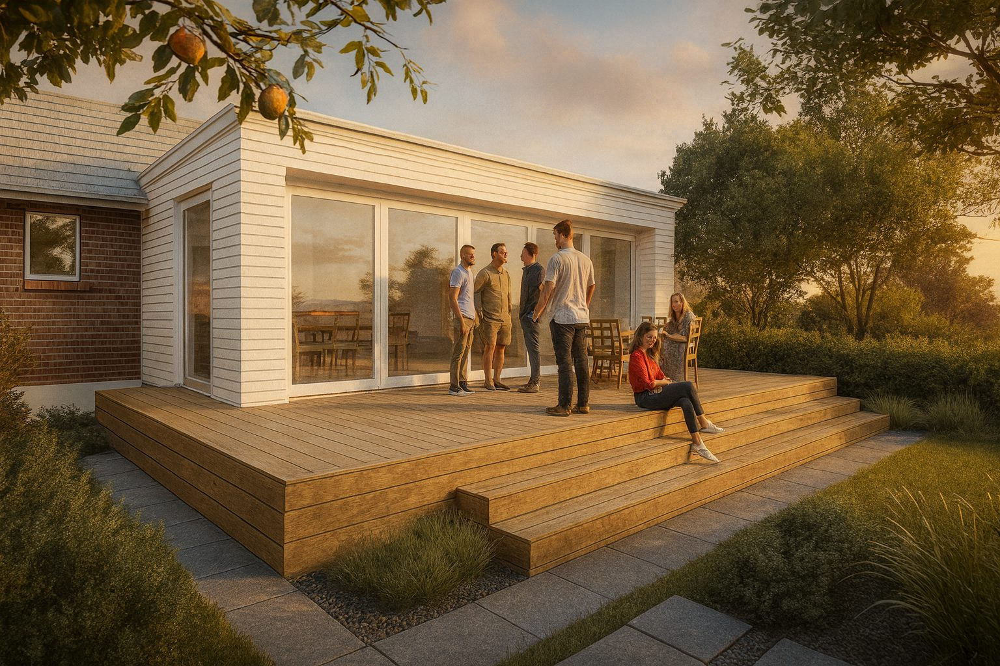

The house on Kiwitea Street had energy and ambition — it just needed someone to channel both. A run-down bungalow in Sandringham with a heritage overlay on the front facade, it was the kind of project where the constraints are actually the making of the design.
Working within the heritage rules meant the front facade stayed largely untouched — the street character preserved. But the rear was a different story. A new extension opens the back of the house completely, creating an open plan living and kitchen space that connects directly to the backyard for the first time.
Cladding to the new addition matches the existing bevelback weatherboards, so the house reads as a coherent whole from every angle — character at the front, contemporary life out the back.
Start Your Project
Your first consultation is free. Let's talk about your site and what you're imagining.